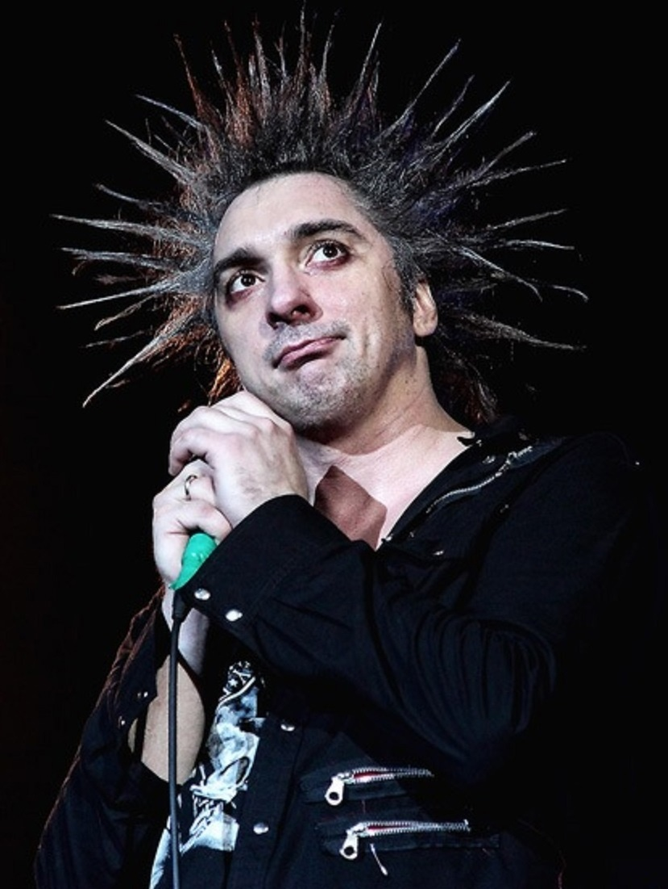
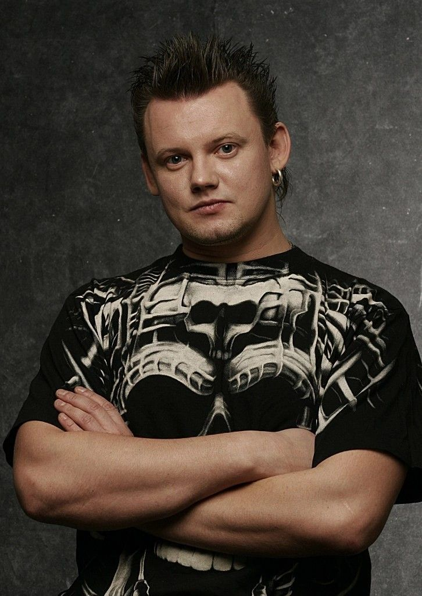
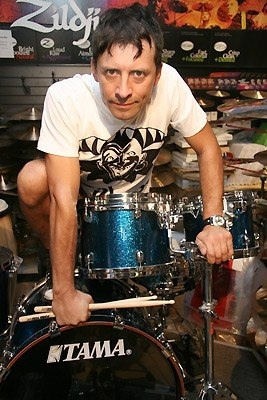
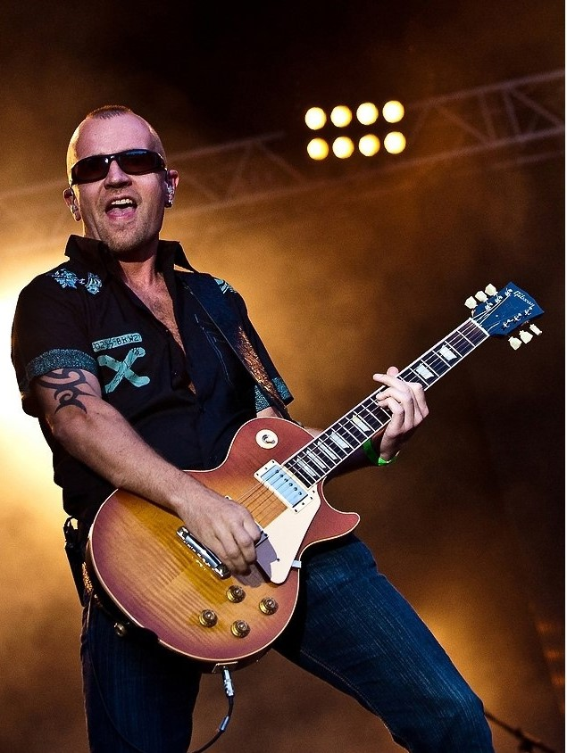
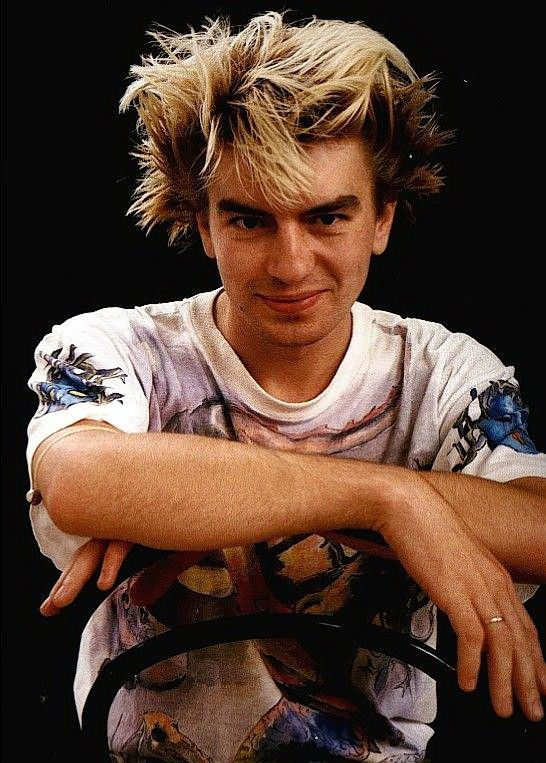
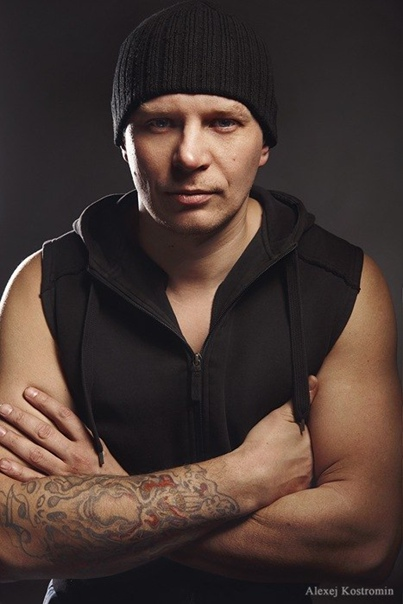
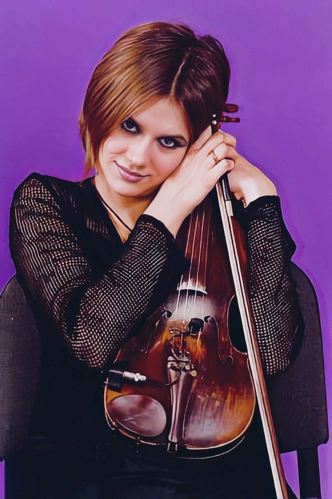
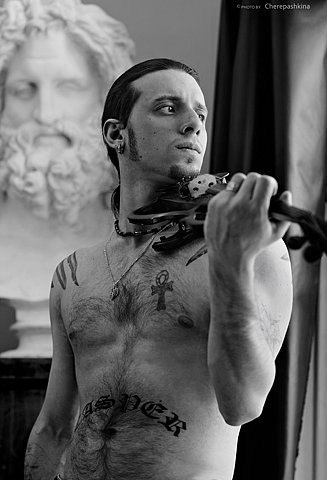
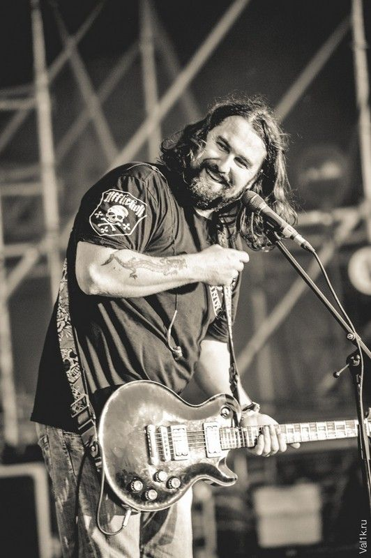

Главная |
Общая информация |
История |
Фильмография |
Дискография |
Источники |
Контакты |
МЕРЧ
Общая информация
Название: "Король и Шут" ("КиШ")
Страна: Россия (г.Ленинград)
Годы: 1988-2013
Состав группы: (те, кого весь мир знает как "КиШ"):

Михаил Горшенёв (Горшок):
Роль в группе: Солист, автор музыки, ритм-гитарист.
Период в группе: 1988-2013.

Андрей Князев (Князь):
Роль в группе: Солист, автор текстов.
Период в группе: 1988-2014 (в составе оригинального состава), с 2019 года — в составе группы "Король и Шут" с новой командой музыкантов.

Александр "Поручик" Щиголев:
Роль в группе: Барабанщик.
Период в группе: 2008-2013, с 2014 года — в составе группы "Король и Шут" без Князева.

Яков Цвиркунов (Яша):
Роль в группе: Соло-гитарист.
Период в группе: 1988-2013, с 2014 года — в составе группы "Король и Шут" без Князева.

Александр Балунов (Балу):
Роль в группе: Бас-гитарист.
Период в группе: 1988-2013, с 2014 года — в составе группы "Король и Шут" без Князева.

Сергей Захаров (Захар):
Роль в группе: Бас-гитарист.
Период в группе:с 2006 по 2013 год.

Мария Нефедова (Маша):
Роль в группе: Скрипачка.
Период в группе: с 1998 по 2004 год.

Дмитрий Ришко (Каспер):
Роль в группе: Скрипач.
Период в группе: с 2006 по 2011 год.

Александр Леонтьев (Ренегат):
Роль в группе: Ритм-гитарист.
Период в группе: с 1996 по 2013 год.
Также в разное время в составе группы выступали:
- Алексей "Лёха" Горшенёв: Брат Михаила Горшенёва, играл на гитаре в ранних составах группы (1988-1991).
- Станислав "Стас" Попов: Барабанщик, играл в группе в 1990 году.
- Сергей "Вишня" Зайцев: Бас-гитарист, играл в группе с 1991 по 1993 год.
- Андрей "Андрейка" Макаров: Кнопочный синтезатор (1993), клавишные (1995-1996).
- Виктор "Капитан" Смоленцев: Гитара, клавишные (1996-1998).
Важно отметить:
После смерти Михаила Горшенёва в 2013 году группа продолжила существование, но без Андрея Князева.В 2019 году Князь воссоздал группу «Король и Шут» с новой командой музыкантов.
© Все права защищены. В.В. Филатова, ММО111-3, 4 курс, 2024г.